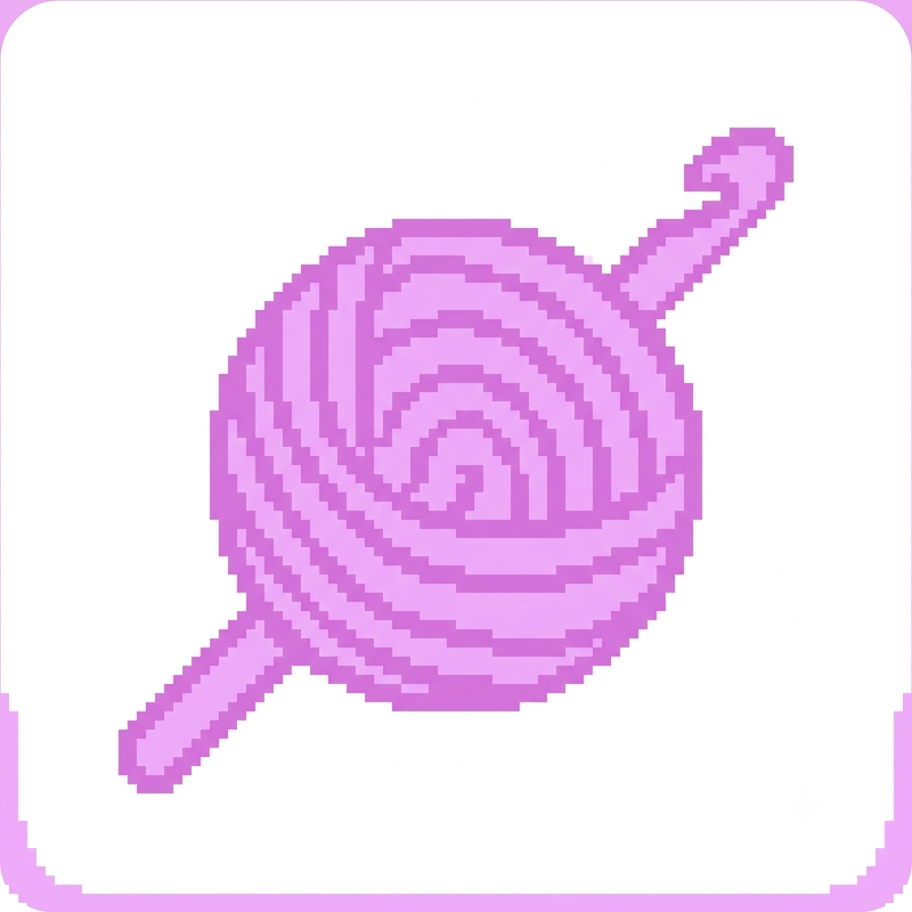

Meu primeiro post
Por: Luisa Vitória
Boas-vindas ao meu novo blog! Aqui vou compartilhar dicas de quais linhas e agulhas escolher e curiosidades da área.
Vou compartilhar conhecimentos sobre a arte do crochê e tapeçaria
Por: Luisa Vitória
Boas-vindas ao meu novo blog! Aqui vou compartilhar dicas de quais linhas e agulhas escolher e curiosidades da área.

Minha segunda publicação
Por: Luisa Vitoria